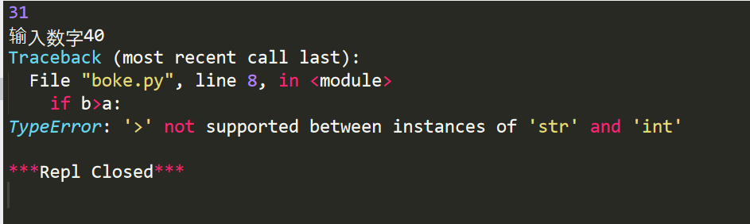
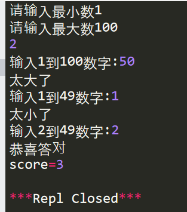

今天来开发一个简单的数字逻辑游戏，猜数字（数字炸弹）
首先开发游戏第一件事，了解需求。
猜数字游戏规则：
计算机随机生成一个指定范围的数字，由玩家来猜测，
之后计算机会根据玩家提供数字来与自己生成的数字进行对比，并返回结果太大或者太小
例：计算机随机生成1-100的数字53，玩家猜测为50，计算机对比结果后返回结果：太小了
多次重复直到玩家猜中数字，游戏结束统计分数。
需求分析：
1.计算机随机生成数字；
2.与输入结果进行比较，返回太大太小结果；
3.判定是否回答正确，结束游戏；
3.记录分数并且输出；
开发环境：
python版本：IDLE 3.7
开 发 软 件：sublime_text
技术支持：
随机数在计算机应用中十分常见，在Python中，通过内置random库来实现产生各种分布的伪随机数序列。
random数据库通过采用梅森旋转算法，可用于除随机性要求更高的加密算法外的大多数工程应用。
简单理解，random库的作用就是生成随机数。主要使用函数如下：
1. random.random()
random.random()方法返回一个随机数，其在[0.0,1.0)的范围之内的随机小数。
2. random.uniform(a,b)
random.uniform()是在指定范围内生成随机小数，其有两个参数，一个是范围上限，一个是范围下限，范围为[a,b]。
3. random.randint(a,b)
random.randint()是随机生成指定范围内的整数，其有两个参数，一个是范围上限，一个是范围下限制，范围为[a,b]。
4. random.randrange(start,stop[,step])
random.randrange()是在指定范围内，按指定基数递增的集合中获得一个随机数，有三个参数，前两个参数代表范围上限和下限，第三个参数是递增增量，默认为1。
5. random.choice(sep)
random.choice()是从序列中获取一个随机元素。
6. random.shuffle(sep)
random.shuffle()函数是将一个列表中的元素打乱，随机排序。
7. random.sample(pop,k)
random.sample()函数是从指定序列中随机获取指定长度的片段，原有序列不会改变，有两个参数，第一个参数代表指定序列，第二个参数是需获取的片段长度。
8. randm.getrandbits(k)
getrandbits()函数生成一个k比特长度的随机整数
8. randm.seed(a=None)
seed()函数主要作用为初始化随机数种子，默认值为当前系统时间
程序开发：
参照需求分析，开发步骤如下
1.创建一个指定范围内的整数，以1-100为例
首先生成随机数需要调用random函数，为方便通过关键词as改为r。
其次我们需要生成的数字为整数，且有着明确的范围，所有应当使用random.randint(a,b)来生成对应整数。
最后输出检测是否成功生成。
代码设计如下
import random as r
a = r.randint(1,100)
print(a)
注意：有的同学习惯将第二行、第三行写到一起，即：print(r.random(1,100))
这样写是没有任何问题的，但是由于后期判断玩家回答是否正确需要用到这一数字，所以还是创建一个变量来保存比较好。
2.接收玩家输入的数字，并且计较大小
首先创建一个变量来接收玩家输入的数字，刚刚使用的a来存储计算机所生成的随机数，所以这里用b来代表玩家输入的数字。
之后使用 if 判断语句来将玩家输入数字b与计算机生成数据a来作比较 。
当b>a时输出太大了；当b<a时输出太小了；当 b=a时输出猜中了。
代码如下：
import random as r
a = r.randint(1,100)
# 方便调试程序、调试结束当将本句注释掉
print(a)
b=int(input("输入数字"))
if b>a:
print("太大了")
elif b<a:
print("太小了")
else:
print("恭喜答对")
注意：由于b是通过input()函数接收到的数据，所以b默认的数据类型为string，所以会报错string类型的b不能与int类型的a做比较大小操作。情况如下

解决方法：
1.通过int()，改变b的数据类型，如上文所写b=int(input("输入数字"))
2.通过eval()，自动识别接收数据类型
3.创建循环，重复第二部分，直到玩家答对数字
两种循环，for循环和 while循环哪一个更好一点呢？
for循环的特点为先判断条件，再执行语句。
while循环的特点为先执行语句，再循环。
猜数字游戏自然是先执行语句再判断的好所以本处使用while循环
跳出循环的条件为玩家回答正确，跳出的方式也多种多样
第一种：判断条件为False
我们可以创建变量 flag，while条件为flag为真
此时只需要在玩家回答正确之后，更改falg值为假即可。
import random as r
a = r.randint(1,100)
# 方便调试程序、调试结束当将本句注释掉
print(a)
flag = 1
while flag == 1:
b=int(input("输入数字"))
if b>a:
print("太大了")
elif b<a:
print("太小了")
else:
print("恭喜答对")
flag = 0
第二种：break跳出
关键字break 功能为跳出本循环体，所以这时候可以设定while循环条件恒为真
import random as r
a = r.randint(1,100)
# 方便调试程序、调试结束当将本句注释掉
print(a)
while True:
b=int(input("输入数字"))
if b>a:
print("太大了")
elif b<a:
print("太小了")
else:
print("恭喜答对")
break
4.添加分数、游戏输出
分数的统计方法十分简单，只需要统计循环体的循环次数即可。
设定一个变量来统计循环次数，变量初量为“0”，在每次循环前变量+1即可。
当然个人喜好也可以赋初值为100，每次循环-1，最后统计输出数值即可。
所以最终代码如下：
import random as r
a = r.randint(1,100)
# 方便调试程序、调试结束当将本句注释掉
#print(a)
score = 0
while True:
b=int(input("输入数字"))
score+=1
if b>a:
print("太大了")
elif b<a:
print("太小了")
else:
print("恭喜答对")
break
print("score=%d"%score)
程序优化：
1.手动输入上下限制
上述程序中，以1-100为例，而我们平常所使用中，可以自主设定上下限。
所以第一步将原来的限制更改为自主输入。
上述设定a为计算机生成数，b为玩家输入数字，理所当然c、d承担起上下限制的重任
首先需要来接收玩家输入的数据，由于生成的随机数a需要上下限制的参数，所以接收应当在生成随机数前面。
之后将random传入参数改为 变量名c、d
如下代码所示
import random as r
c = int(input("请输入最小数"))
d = int(input("请输入最大数"))
a = r.randint(c,d)
# 方便调试程序、调试结束当将本句注释掉
#print(a)
score = 0
while True:
b=int(input("输入数字"))
score+=1
if b>a:
print("太大了")
elif b<a:
print("太小了")
else:
print("恭喜答对")
break
print("score=%d"%score)
2.显示数字范围
每一次都只回应请”输入数字”，如果可以将之前的数据更新迭代，也就是输出范围想来要比原计划好一些。
如果这样做，最先修改的便是输入b时候的语句，需要将上下限制加入。
之后上下限制的数据也要对应发生改变，以1-100为范围，随机数为60为例：
玩家输入50，计算机给出回应太小了，之后请求输入的是51-100的数据。
也就是说最初玩家输入c(1)~d(100) 当玩家输入新数据b(50)之后,cd将要根据b的情况来更新
当太小了时候，c=b+1
当太大了时候，d=b-1
代码以及结果如下：
import random as r
c = int(input("请输入最小数"))
d = int(input("请输入最大数"))
a = r.randint(c,d)
# 方便调试程序、调试结束当将本句注释掉
print(a)
score = 0
while True:
b=int(input("输入%d到%d数字:"%(c,d)))
score+=1
if b>a:
print("太大了")
d=b-1
elif b<a:
print("太小了")
c=b+1
else:
print("恭喜答对")
break
print("score=%d"%score)
